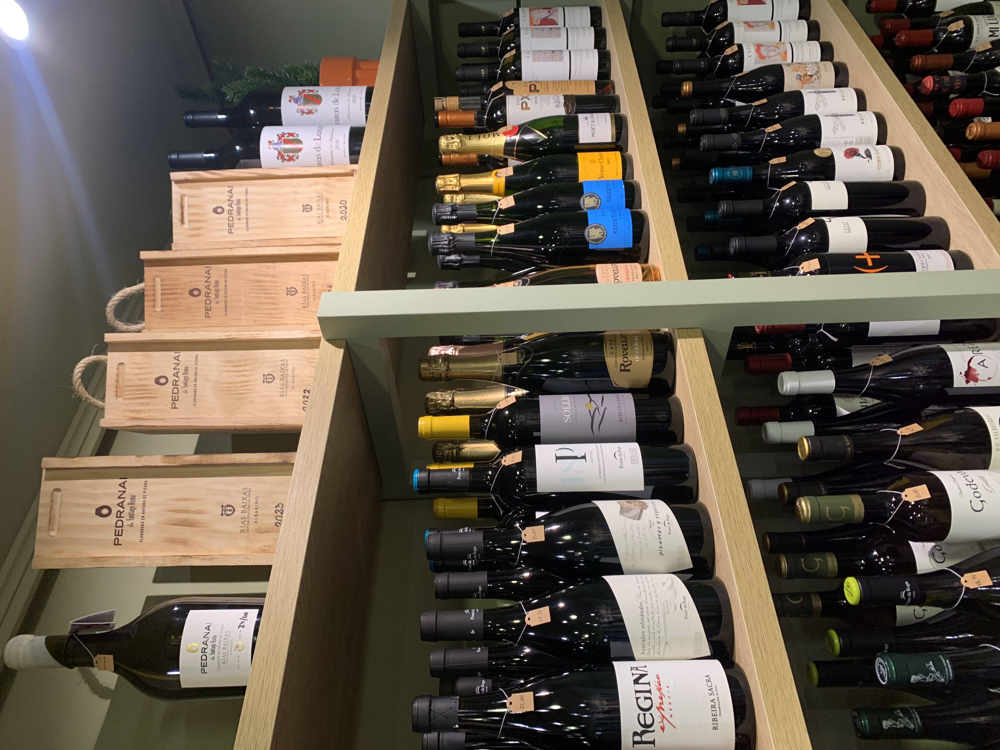
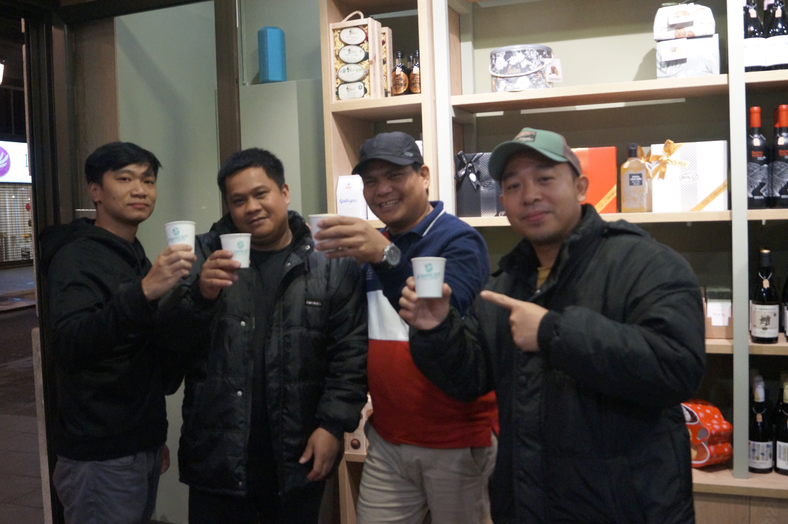

Acompañados por expertos
Pasión por el detalle
Sebarista, especialista de Sabor Maestro, combina más de 10 años de experiencia en el mundo del café de especialidad con una sólida formación en sumillería.
Desde asesorías a hostelería hasta talleres formativos, su misión es guiarte en un viaje sensorial donde cada matiz y cada historia importan.
Nuestras Modalidades

Cata en Tienda
Disfruta de nuestras catas privadas de café y vino en el ambiente acogedor de Sabor Maestro. Una experiencia auténtica, profesional y cercana en el corazón de Vigo.
Cata a Domicilio
Llevamos el ritual a tu espacio. Sebarista se desplaza con todo el material necesario para que tu evento privado sea exclusivo, personalizado y memorable.